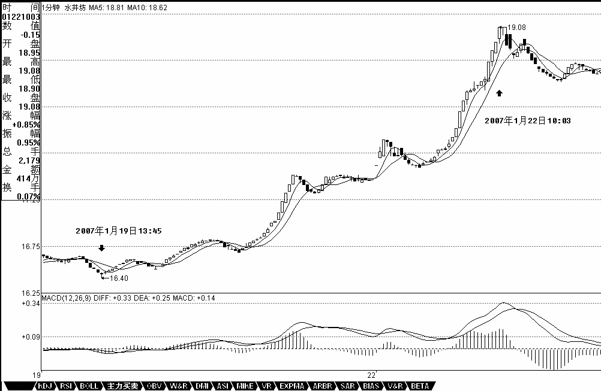
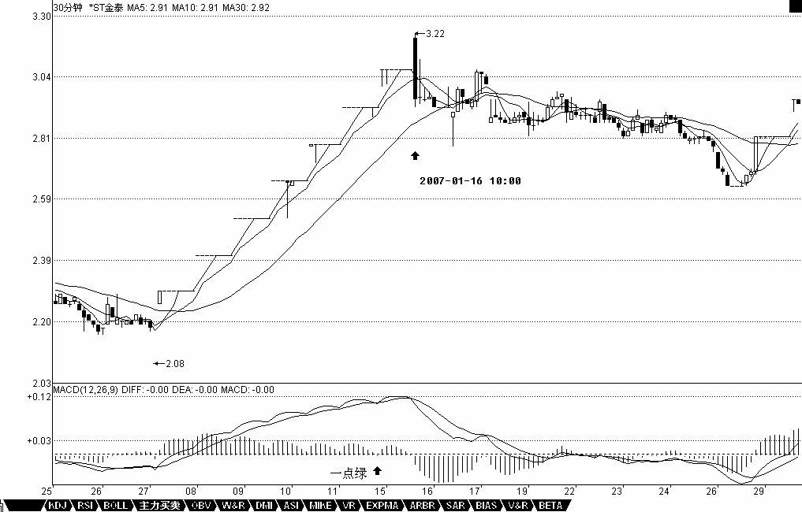
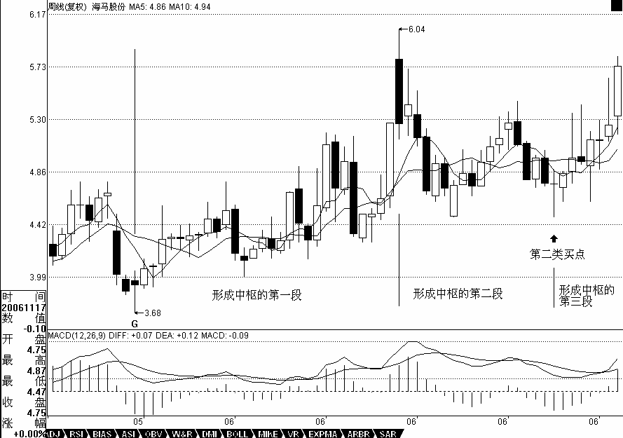
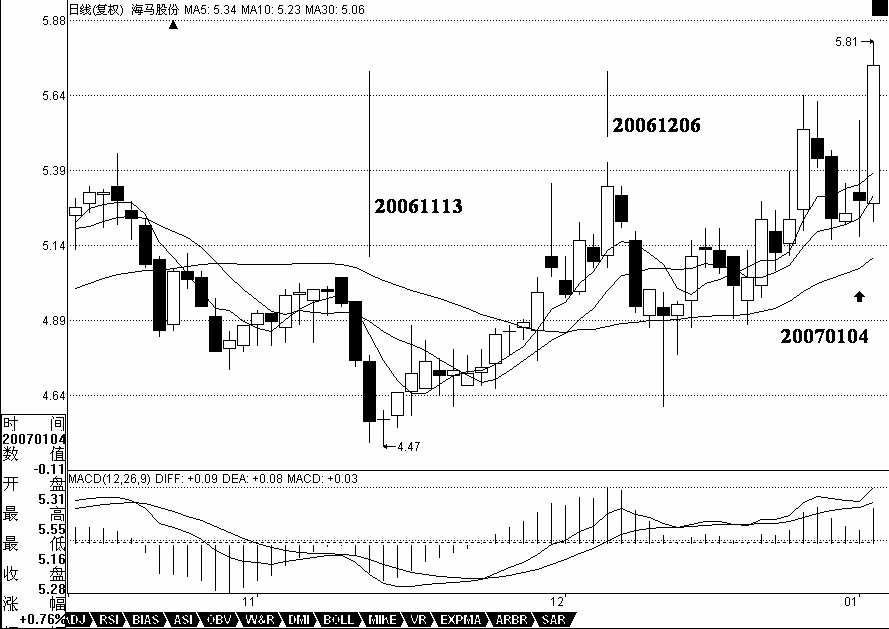

0440 - 教你炒股票25：吻，MACD、背弛、中枢¶
日期：(2007-01-23 15:13:13) 分类：[时政经济（缠中说禅经济学）]
发现很多人把以前的东西都混在一起了，所以先把一些问题再强调一下。所谓的“吻”，是和均线系统相关的，而均线系统，只是走势的一个简单数学处理，说白了，离不开或然率，这和后面所说的中枢等概念是完全不同的，所以一定要搞清楚，不要把均线系统和中枢混在一起了。均线系统，本质上和MACD等指标是一回事，只能是一种辅助性工具。由于这些工具比较通俗，掌握起来比较简单，如果不想太深研究的，可以先把这些搞清楚。

【编者注：此图可能是当时的网友补充的】
但“学如不及”，对事情如果不能穷根究底，最终都是“犹恐失之”的，因此，最终还是要把中枢等搞清楚。MACD，当一个辅助系统，还是很有用的。MACD的灵敏度，和参数有关，一般都取用12、26、9为参数，这对付一般的走势就可以了，但一个太快速的走势，1分钟图的反应也太慢了，如果弄超短线，那就要看实际的走势，例如看600779的1分钟图，从16。5上冲19的这段，明显是一个1分钟上涨的不断延伸，这种走势如何把握超短的卖点？不难发现，MACD的柱子伸长，和乖离有关，大致就是走势和均线的偏离度。打开一个MACD图，首先应该很敏感地去发现该股票MACD伸长的一般高度，在盘整中，一般伸长到某个高度，就一定回去了，而在趋势中，这个高度一定高点，那也是有极限的，一般来说，一旦触及这个乖离的极限，特别是两次或三次上冲该极限，就会引发因为乖离而产生的回调。这种回调因为变动太快，在1分钟上都不能表现其背驰，所以必须用单纯的MACD柱子伸长来判断。注意，这种判断的前提是1分钟的急促上升，其他情况下，必须配合黄白线的走势来用。从该1分钟走势可以看出，17。5元时的柱子高度，是一个标杆，后面上冲时，在18。5与19元分别的两次柱子伸长都不能突破该高度，虽然其形成的面积大于前面的，但这种两次冲击乖离极限而不能突破，就意味着这种强暴的走势，要歇歇了。
还有一种，就是股票不断一字涨停，这时候，由于MACD设计的弱点，在1分钟、甚至5分钟上，都会出现一波一波类似正弦波动的走势，这时候不能用背弛来看，最简单，就是用1分钟的中枢来看，只要中枢不断上移，就可以不管。直到中枢上移结束，就意味着进入一个较大的调整，然后再根据大一点级别的走势来判断这种调整是否值得参与。如果用MACD配合判断，就用长一点时间的，例如看30分钟。一般来说，这种走势，其红柱子都会表现出这样一种情况，就是红柱子回跌的低点越来越低，最后触及0轴，甚至稍微跌破，然后再次放红伸长，这时候就是警告信号，如果这时候在大级别上刚好碰到阻力位，一但涨停封不住，出现大幅度的震荡就很自然了。例如600385，在2。92那涨停，MACD出现一点的绿柱子，然后继续涨停，继续红柱子，而3。28元是前期的日线高位，结果3。22涨停一没封住，就开始大幅度的震荡。

【编者注：此图可能是当时的网友补充的】
注意，如果这种连续涨停是出现在第一段的上涨中，即使打开涨停后，震荡结束，形成一定级别的中枢后，往往还有新一段的上涨，必须在大级别上形成背驰才会构成真正的调整，因此，站在中线的角度，上面所说的超短线，其实意义并不太大，有能力就玩，没能力就算了。关键是要抓住大级别的调整，不参与其中，这才是最关键的。
此外，一定要先分清楚趋势和盘整，然后再搞清楚背驰与盘整背驰。盘整背驰里的三种情况，特别是形成第三类买点的情况，一定要搞清楚。注意，盘整背驰出来，并不一定都要大幅下跌，否则怎么会有第三类买点构成的情况。而趋势中产生的背驰，一定至少回跌到B段中，这就可以预先知道至少的跌幅。
对背驰的回跌力度，和级别很有关系，如果日线上在上涨的中段刚开始的时候，MACD刚创新高，红柱子伸长力度强劲，这时候5分钟即使出现背驰，其下跌力度显然有限，所以只能打点短差，甚至可以不管。而在日线走势的最后阶段，特别是上涨的延伸阶段，一个1分钟的背驰足以引发暴跌，所以这一点必须多级别地综合来考察，绝对不能一看背驰就抛等跌50%，世界上哪里有这样的事情。
一般来说，一个标准的两个中枢的上涨，在MACD上会表现出这样的形态，就是第一段，MACD的黄白线从0轴下面上穿上来，在0轴上方停留的同时，形成相应的第一个中枢，同时形成第二类买点，其后突破该中枢，MACD的黄白线也快速拉起，这往往是最有力度的一段，一切的走势延伸等等，以及MACD绕来绕去的所谓指标钝化都经常出现在这一段，这段一般在一个次级别的背驰中结束，然后进入第二个中枢的形成过程中，同时MACD的黄白线会逐步回到0轴附近，最后，开始继续突破第二个中枢，MACD的黄白线以及柱子都再次重复前面的过程，但这次，黄白线不能创新高，或者柱子的面积或者伸长的高度能不能突破新高，出现背驰，这就结束了这一个两个中枢的上涨过程。明白这个道理，大多数股票的前生后世，一早就可以知道了。

【编者注：此图可能是当时的网友补充的】
用最近涨得最厉害的一个股票来说明，000572。该股票的力度，其实是和他在日线与周线上出现双重的第二类买点有关，相应地，就有了MACD双重在0轴停留形成第一个中枢的情况。在周线上，该股从20051209到20060714，形成第一段，同时MACD也回到0轴上面。其后就开始形成第一个中枢，最终在20061117形成第二类买点，同时，黄白线在0轴附近横盘。然后，开始逐步摆脱该中枢，黄白线也逐步拉起。在日线上，这个过程也是一样的， 20061113到20061206，形成日线上的第一段，同时MACD回到0轴上面。然后三段回拉在20070104结束，形成第一个中枢，其后突破中枢，MACD在0轴附近拉起，摆脱第一个中枢。该股以后的走势就很简单了，首先形成一个至少是日线级别的新中枢，同时MACD回抽0轴，然后再突破，出现背驰，构成一个大调整，从而导致一个至少周线以上级别的中枢，使得MACD出现回拉0轴，然后再拉起来，出现背驰，其后的调整就大了去了，至少是月线级别的。

【编者注：此图可能是当时的网友补充的】
必须注意，MACD在0轴附近盘整以及回抽0轴所形成的中枢，不一定就是相应级别的中枢，而是至少是该级别的中枢。例如日线MACD的0轴盘整与回拉，至少构成日线的中枢，但也可以构成周线的中枢，这时候就意味着日线出现三段走势。
本文评论获取自靠谱的方式，包含疑似禅师的回复数量：[40]
UID:[1215172700] 昵称：缠中说禅 日期：(2007-01-23 15:28:03)
今天的走势没什么特别的，就是回补缺口，由于2870触及，因此还存在继续演化成大级别中枢的情况，明天，继续震荡也是很正常的。目前一个最简单的判断，就是看5日线，只要该线不破，就问题不大，否则，一个大级别的中枢延续是逃不掉的。目前，能让大盘摆脱这种不好走势的，关键是看金融股了，由于兴业这破银行的发行价高高在上，你让金融股怎能不躁动？已经说过多次，银行股中线还早着，你看看还有多少银行要回来上市，春节以后，中信要回来，后面什么建行、交行之类的，多了去了。个股没什么说的，连军工、有色等老板块都开始再次活跃，无非说明了，这大盘即使短线有些震荡，中线还是问题不大的。
UID:[1215172700] 昵称：缠中说禅 日期：(2007-01-23 15:29:52)
[匿名] 花蝴蝶 2007-01-23 15:20:30
缠姐好!!今天好紧张的.
==
有什么紧张的？补缺口这事情昨天不早说了？关键要设计好自己的操作节奏。如果短线没时间，那就算了。
UID:[1215172700] 昵称：缠中说禅 日期：(2007-01-23 15:34:14)
今天为这位带个大红花，因为他至少在中午提到要回补，证明对短线的节奏已经有一点感觉了。短差就是来回弄出来的，抛了不回补，不如不抛。关键是要找对回补的位置。
[匿名] 罗锅 2007-01-23 11:37:14
[匿名] stone 2007-01-23 11:34:13
破2870了，按LZ所说，调整大了，是不是应该出来了？
BBBBBBBBBBB
早上高开就该先出来！！！！！！！！！！！！！！！数学妹妹不是说了！！！！！最迟周四前一定回试考验缺口！！！！！！！！！！！！！！！！！！！俺说现在只是调整！！！！！！！！！！！！！好股票是不怕的！！！！！！！！！！！！！！！！！！！！！！！！！看着5分钟背弛就可以回补了！！！！！！！！！！！！！！！！！！！！！！！！！！！！！！！！！！
UID:[1215172700] 昵称：缠中说禅 日期：(2007-01-23 15:37:20)
[匿名] 猫猫 2007-01-23 15:30:48
博主姐姐，还有问题趋势和盘整的问题，某级别中趋势的中枢和此级别盘整的中枢是否是同一个级别的我感觉中枢和盘整的概念很难弄清楚，能不能帮我解析下
==
连接两同向趋势的盘整中枢，当然要比那两趋势的中枢级别高，否则就归到其中一个趋势去了。搞明白中枢就可以，盘整不用管，只要把中枢的确立、延伸、扩展、新生等搞明白，自然就明白盘整。
UID:[0] 昵称：[匿名] 罗锅 日期：(2007-01-23 15:38:13)
缠中说禅 2007-01-23 15:34:14
今天为这位带个大红花，因为他至少在中午提到要回补，证明对短线的节奏已经有一点感觉了。短差就是来回弄出来的，抛了不回补，不如不抛。关键是要找对回补的位置。
[匿名] 罗锅 2007-01-23 11:37:14
[匿名] stone 2007-01-23 11:34:13
破2870了，按LZ所说，调整大了，是不是应该出来了？
BBBBBBBBBBB
早上高开就该先出来！！！！！！！！！！！！！！！数学妹妹不是说了！！！！！最迟周四前一定回试考验缺口！！！！！！！！！！！！！！！！！！！俺说现在只是调整！！！！！！！！！！！！！好股票是不怕的！！！！！！！！！！！！！！！！！！！！！！！！！看着5分钟背弛就可以回补了！！！！！！！！！！！！！！！！！！！！！！！！！！！！！！！！！！
BBBBBBBBBBB
数学妹妹亲一下！！！！！！！！！！！！！！！！！！！
UID:[1215172700] 昵称：缠中说禅 日期：(2007-01-23 15:41:35)
[匿名] 缠fans 2007-01-23 15:30:47
缠姐，今日大盘没碰1月10日2841。74中枢上限，没补缺口，是否意味着有惊无险，可以找买点介入了。
==
节奏全错，应该是早上出，下午补。这逻辑很明确的。因为一定要去回试缺口，所以早上一开2970，肯定意味着有至少100点的回试空间，这不就是最好的短差机会？注意，短差可以是买了抛，也可以是卖了回补，这钱和股票一定要不断流动，这才是弄短差，否则就干脆弄长线，或者至少等日线背驰再说。
UID:[1215172700] 昵称：缠中说禅 日期：(2007-01-23 15:47:04)
[匿名] 大盘 2007-01-23 15:41:18
今天虽然回探2869高点（中枢三段的高高点），但是好像没有触及日线中枢高点2840点，不知是不是我对中枢的判断还是有错？望楼主指点
==
由于触及最高点，使得存在演化成大中枢的危险，但由于回试如果是两次的，那只要下一次不跌破这个位置，那就会使得中枢的脱离得到确认。所以，现在是一个震荡时期，站在短线的角度，是最好玩的，上不去就给，跌下来只要不有效跌破2870，就买回来。而一旦确认回试站稳，那就单边上去，或至少是震荡上去了，下面这个中枢就见不着了。
UID:[0] 昵称：[匿名] 悠悠悠哉 日期：(2007-01-23 15:47:59)
看了有一点点懂艾 那我扔掉的600217岂不是刚破前面的中枢开始日线上涨的？哭啊 不知道有机会补回来哇
UID:[1215172700] 昵称：缠中说禅 日期：(2007-01-23 15:48:39)
[匿名] 猫猫 2007-01-23 15:44:36
2.每个走势的端部是否都应该存在一个中枢？
==
不一定，如果是突然跳空上来或下去，可以只在下面形成中枢，中枢的位置没有什么固定的，哪里都可以，但只要是完整的走势类型，就一定至少有一个中枢。
UID:[0] 昵称：[匿名] 悠悠悠哉 日期：(2007-01-23 15:49:03)
等待3类买点
UID:[1215172700] 昵称：缠中说禅 日期：(2007-01-23 15:56:11)
[匿名] 如初见 2007-01-23 15:46:15
000629，1分钟图，14：54出现背弛，见新高、面积小、回抽0轴、红柱短，但又不确定，缠MM帮看看，如果是，明天开盘出一半，多谢
===
你要经常考虑的是，大的级别是什么，才考虑1分钟的，除了最后的冲刺以及权证，一般都没必要看1分钟的，当然，1分钟背弛，在盘中肯定有回跌，但关键是这种回跌如果不及时补回来，一下就过去了。所以，除非你每天每秒都趴在股市里，否则太短的短线不一定要弄。短线是用来摊成本的，要挣大钱，关键是看中线。例如本ID的药，你看1分钟背驰，只要你手脚慢点，一定没机会补回来。至少到今天，都是这样。越难弄短差的，越是中线的好股票，很多人总是说，某某股票曾买过，抛了还涨1倍、2倍、3倍，这种事情少见吗？
UID:[0] 昵称：[匿名] 悠悠悠哉 日期：(2007-01-23 15:56:48)
长了必盘整或下跌跌了必盘整或上涨盘了必上涨或下跌什么时候会变，要看什么判断？技术分析，阻力，大盘，资金……老大， 看什么啊？
UID:[1215172700] 昵称：缠中说禅 日期：(2007-01-23 16:00:15)
[匿名] 大盘 2007-01-23 15:55:41
缠中说禅 2007-01-23 15:47:04
[匿名] 大盘 2007-01-23 15:41:18
今天虽然回探2869高点（中枢三段的高高点），但是好像没有触及日线中枢高点2840点，不知是不是我对中枢的判断还是有错？望楼主指点
-----
有点明白了，要是下一个30分钟的下跌走势完成后的低点高过2870，应该基本就是继续上升和震荡上升（在2870上震荡）的大盘行情了
===
对，但操作上不能这样，而是冲搞只要没力，也就是短线背驰，就出来，回试不破就回补，而不是看最后的结果，如果是结果破了，那时候再操作，是不是有点太晚？不过一定要注意，本ID这里说的是小资金的人，天天可以全仓进进出出的，对于资金大的，只能部分的弄短差来降低成本，这和资金量有关系，而且更和你手中的股票有关系，有些股票，大盘跌了，涨得更兴奋，所以短差是要具体看个股的具体走势的，不能一概而论。
UID:[1215172700] 昵称：缠中说禅 日期：(2007-01-23 16:03:56)
好好学好本ID的理论，谁真正学好了，挣大钱的机会还在后面。就算你只有一手期指的钱，足以让你在N年内成为一个没有金钱压力的人。成为人，首先就是要摆脱金钱的压力，于金钱而自由。好好学习吧。本ID要去一趟中国最多高官住的地方，北京的都知道本ID说的是哪条街道，先下了，晚上回来再说。再见。
UID:[0] 昵称：[匿名] 悠悠悠哉 日期：(2007-01-23 16:04:01)
如果日线上是一段跌势判断他时候跌完了 那就看30分图 有没有形成三段连续的重复日线的走势，30分钟上出现背驰，那日线也就结束下跌，转到盘整或上涨？？
UID:[0] 昵称：[匿名] 悠悠悠哉 日期：(2007-01-23 16:07:08)
老大的口气像在说我，我有好好学习的啊！
UID:[0] 昵称：[匿名] 悠悠悠哉 日期：(2007-01-23 16:21:55)
长了必盘整或下跌跌了必盘整或上涨盘了必上涨或下跌什么时候会变，要看什么判断？如果日线上是一段跌势判断他什么时候跌完了 那就看30分图 有没有形成三段连续的重复日线的走势（一个中枢），30分钟上出现背驰，那日线也就结束下跌，转到盘整或上涨？？如果这这样，那不断的缩小级别，到最后在急速下跌的时候会在1分中图上出现背驰，那就结束下跌了？转为上升或盘整？盘整的突破，看次级别是不是形成向上的中枢（摆脱前面的中枢），这个中枢的回跌，又没跌破经入前面的盘整，那就是3类买点？是哇 老大???
UID:[1215172700] 昵称：缠中说禅 日期：(2007-01-23 21:05:25)
[匿名] 大盘 2007-01-23 16:27:45
赚到了
--------------------
缠MM,上次上课的时候不是说只要中枢高点被触及,就不能算形成中枢新生,而是变成中枢扩张,怎么又变成要两次回试呢?
-----------
大概2870只是日线三段中枢的高高点（从30分钟图表看），而不是日线中枢高点2840，楼主文章强调的可能是不触及中枢高点，当然只要回试触及三段的最高点，仍可能形成更大级别的中枢，例如周线中枢，至于二次回试后不破2870是形成日线级别新的中枢呢还是与更大级别中枢有什么关系，楼主没有进一步解释，我也就不清楚了。这是我粗浅的理解
===
在突破中，第一次很低级别的回抽，只要不跌回中枢里面，而是触及围绕中枢震荡的外围高点，就象这次的2870，那还不能肯定就一定会构成更大级别的中枢。为什么？因为例如下面的中枢是日线级别的，如果第一次的回拉只是5分钟级别的，那很可能只是上升途中的小级别回拉，只有当次级别的，对日线来说，也就是至少是30分钟级别的回拉触及，才算是构成更大级别的中枢。这个道理其实很简单，想想为什么两个同级别中枢的连接一定是次级别以下的走势，就明白了。
UID:[1215172700] 昵称：缠中说禅 日期：(2007-01-23 21:10:24)
[匿名] abc 2007-01-23 19:58:46
最近看到老外要做庄A股的说法，请教LZ对此的看法，会不会A股也象东南亚一样？
==
现在是战国时代，统一六国还早了，鹿死谁手，还说不好。外国人进来是迟早的事情，其实也没什么大不了的，中国人终有一天要大规模走出去的，世界市场少了中国人怎么能算世界市场？现在先在这里和他们练练，也没什么坏处。中国人从来都不会被外国人打败，只有中国人才能害中国人，看看历史，中国的外患没有前赴后继的汉奸蠢动，能成事吗？中国最大的祸患不是外国人，而是汉奸。
UID:[1215172700] 昵称：缠中说禅 日期：(2007-01-23 21:19:44)
[匿名] 恒旧常新 2007-01-23 20:35:41
请问缠老师:
按照"趋势中的缠中说禅走势中枢之间必须绝对不存在重叠。"的要求,我发现600497在05年3月14日开始到05年7月27日结束的下跌趋势中,两个日线中枢的外缘是重叠的.我判断的中枢是05.3.30--05.5.9; 05.6.6--05.6.21
不知我的问题在哪里?请教老师
==
用高点比高点低、低点比低点低来定义下跌，这算是下跌，但用最精确的中枢来定义，这不构成下跌，只是一个中枢的复杂延伸构成，没有两个中枢。注意，有了中枢以后，对下跌、盘整的判断一定以中枢的角度看，其他的角度，都可以先放下了。
UID:[1215172700] 昵称：缠中说禅 日期：(2007-01-23 21:21:01)
[匿名] 心禅 2007-01-23 21:17:03
“禅主”，回来了吗？
1、文中提到“乖离”，就是指走势和均线的偏离度吗？“乖离”这个指标如何计算？（比如是大于1或者小于1）；
2、趋势中一定高度的高点极限如何计算，（比如说000572，前面没有可比性）
===
这不用计算，用柱子的长度就可以，这都是很直观的。
UID:[1215172700] 昵称：缠中说禅 日期：(2007-01-23 21:27:51)
[匿名] 猫猫 2007-01-23 21:16:27
博主姐姐，还有这个问，麻烦你了哦假定已经存在一个上升趋势中枢A，形成这个中枢的最后一个次级别走势直接下来，然后出现三个次级别重叠，下A下方形成一个新的中枢B，那AB是不是已经形成一个新的下跌趋势了？还是要再在B下方形成一个C中枢才能认为形成趋势了？
==
这种情况其实就是V型转势的情况，一般都是在最高点左右分别有一个上一个下的次级别走势，然后左右对称都形成一个中枢，在大图形上，就构成类似头肩顶的走势，然后再跌破中枢下去形成新的中枢构成下跌。至于从顶上直接打破上升最后一个中枢的情况，一般情况下都会回拉过来形成大的中枢。如果连回拉都不拉，直接在下面形成中枢，而同样需要再跌破这中枢然后在下面形成第二个中枢才算下跌。但这种情况十分罕见，基本只出现在除权后。或者毁灭性利空的突发中。
UID:[1215172700] 昵称：缠中说禅 日期：(2007-01-23 21:29:19)
[匿名] 舍小赢大 2007-01-23 21:26:16
缠MM 好 想请教一下 你常指得有效跌破是 指跌破多少呢 有百分比吗?谢谢
===
就是次级别下去，次级别反拉不能重新上来。这和百分比无关。
UID:[1215172700] 昵称：缠中说禅 日期：(2007-01-23 21:51:23)
[匿名] 天山飞狐
======================
"601333的日线中枢从1041430开始到1171430最终形成，1101030的高点，根据走势必完美，就知道必然有第三段的回拉。配合MACD15分钟的背驰，就更明确了。注意，在30分钟看，第三段的结束不在最低位，因为第三段的中枢在下面。"这里不解的是:为什么不能说601333的日线中枢从1041430开始到1121500就算完成呢?1101030到1121500不也是完整的一段吗?还有一个混淆的概念是:这三段走势在30分钟明显构成一个中枢,哪此中枢称为30分钟中枢呢还是日线中枢呢?还是两者都是?期盼楼主答复!!!!!!!!
===
日线的中枢，需要的是30分钟的3段走势，而30分钟的走势，需要的是至少有一个30分钟的中枢。30分钟的中枢，至少需要三段5分钟的走势构成，而第三段下来，是一条直线的，在5分钟上也是一段单纯的5分钟的下跌走势，没有三段。其实这一段的30分钟走势，中枢是在下面的。一定要注意，对于30分钟的走势，一定要至少出现5分钟的三段走势构成的中枢，才算是有了30分钟的中枢，一般，在30分钟上看出一条直线下来的走势，是不会有30分钟中枢的。同样的，在1分钟图上，如果K线是连续暴跌的走势，互相不挨着，也不会形成中枢。例如，在30分钟上3段直上直下的走势，不会构成日线的中枢，只能是30分钟的中枢。
UID:[1215172700] 昵称：缠中说禅 日期：(2007-01-23 21:59:28)
[匿名] 新年好 2007-01-23 21:43:05
对啊，缠姐，我也有心禅同样的疑问？像600779的1分钟线上长到17.8左右的时候，红柱已经明显缩短，按说应该出了，可明显后边又有一个拉升到19左右
===
背驰需要多少个条件？光柱子缩短就背驰？前面的黄白线有回拉0轴吗？背驰和柱子缩短不是一回事情，不能把问题简单化了。
UID:[1215172700] 昵称：缠中说禅 日期：(2007-01-23 22:03:18)
[匿名] 心禅 2007-01-23 21:33:54
缠中说禅 2007-01-23 21:21:01
[匿名] 心禅 2007-01-23 21:17:03
“禅主”，回来了吗？
1、文中提到“乖离”，就是指走势和均线的偏离度吗？“乖离”这个指标如何计算？（比如是大于1或者小于1）；
2、趋势中一定高度的高点极限如何计算，（比如说000572，前面没有可比性）
===
这不用计算，用柱子的长度就可以，这都是很直观的。
=====
全凭经验吗？但是：如000572日线，1月17日MACD红柱子最高1.05,而1月23日最高位11.98时，红柱子已开始缩短，“禅主”这是为何？这也是我最近最为困惑的？总是在最高位的提前1天或半天早放掉，有没有好办法解决？
==
又把问题简单化了，不是柱子缩短就是背驰，对于000572。现在看日线的MACD意义不大，该看的是30分钟以下级别的，因为背弛首先需要的是回拉0轴的黄白线，000572日线上现在怎么会有0轴的回拉？
UID:[1215172700] 昵称：缠中说禅 日期：(2007-01-23 22:07:02)
各位一定要把MACD判断背驰的几个条件综合起来，不能光看柱子就完事，这样还不直接看MACD算了，还搞背驰干什么？如果柱子就有效，也不需要什么背驰了。就是因为柱子经常无效，所以才需要综合性的背驰概念。晚了，先下了，好好研究。股票风险很低，正好是一个练习的好地方，在充分了解之前，千万别去弄什么期货，现在就好好练习吧。
UID:[1215172700] 昵称：缠中说禅 日期：(2007-01-23 22:11:56)
[匿名] 风儿 2007-01-23 22:05:21
请问上升趋势形成的中枢为什么一定要是下上下形成的呢？前面的文章里面并没有提到啊？而且通常的上升就是上下上形成一个中枢，然后再一直上去，再下上又形成一个中枢啊
==
你说调整是从什么地方算起？难道从低点算起？在上升中形成中枢的地方必然对应着调整，当然是从高点开始算起，自然就是下上下的，这不会太难理解吧。
UID:[1215172700] 昵称：缠中说禅 日期：(2007-01-23 22:12:29)
太晚了，先下，再见。
UID:[0] 昵称：[匿名] 罗锅 日期：(2007-01-23 22:44:41)
[匿名] stone 2007-01-23 22:38:00
能不能回答一下：
2007-01-23 17:56:56
是不是这样：
上证30分钟上1/8/13：30~1/17/13/30构成一个中枢，中枢是2652.98~2841.36,今天下探2851.94，和中枢没有重合，但是和中枢最高点2868.99重合，这个说明更大级别缠中说禅走势中枢会产生，而在更大级别缠中说禅走势中枢产生前，该级别走势类型将延续。也就是大盘将继续盘整？另外：更大级别是不是指日线级别的？
BBBBBBBBBBBB
你没看到数学妹妹的回答吗？？？？？？？？？？？？？在突破中，第一次很低级别的回抽，只要不跌回中枢里面，而是触及围绕中枢震荡的外围高点，就象这次的2870，那还不能肯定就一定会构成更大级别的中枢。为什么？因为例如下面的中枢是日线级别的，如果第一次的回拉只是5分钟级别的，那很可能只是上升途中的小级别回拉，只有当次级别的，对日线来说，也就是至少是30分钟级别的回拉触及，才算是构成更大级别的中枢。这个道理其实很简单，想想为什么两个同级别中枢的连接一定是次级别以下的走势，就明白了。
UID:[0] 昵称：[匿名] 公子白 日期：(2007-01-23 23:29:19)
楼上，LZ在上面说的很清楚，如果是日线级别的，5分钟的回试，就算破了前面的高点，只要不是30分钟的回试破的，就没问题。你想想第三类买点的构成，是次级别的回调不破构成的。
UID:[0] 昵称：[匿名] 公子白 日期：(2007-01-23 23:30:08)
[匿名] 花花世界 2007-01-23 22:52:04
ID姐姐能否点评一下600177雅戈尔,我重仓的,也请贴中高手看看,大家共同提高,多谢
-
好股票，估计以后至少见20。
UID:[0] 昵称：[匿名] 张三 日期：(2007-01-24 06:01:51)
报告博主。今２发现１较比坚挺地面授。。王若鼓。。。１下转自这厮地剥客。。
黑黑。。。
今天首钢(000959)再冲涨停,并且封死涨停!5元以上卖掉了一半,在4.35-4.39元立即分批买入000916华北高速,目前已经有赢利!首钢(000959)剩余的一半,明天冲高,即暂时清仓.等候回调!全年收入达到1000%以上!尤其新年前后到现在赢利接近500%!谈笑间,笑看资金十倍翻!这可是都给国家上了税的啊,同时也为国家税收做出了贡献!作为上税公民,有权利要求国家公仆做出更好的服务!
UID:[0] 昵称：[匿名] 罗锅 日期：(2007-01-24 11:35:21)
缠中说禅 2007-01-23 15:28:03
个股没什么说的，连军工、有色等老板块都开始再次活跃，无非说明了，这大盘即使短线有些震荡，中线还是问题不大的。
BBBBBBBBBBBBBB
数学妹妹！！！！！！！！！！！！！！俺知道你是在提醒军工股票！！！！！！！！！！！！！！！俺早上买啦！！！！！！！！！！！！！！！！！！！！！！！！！！！！！！药也牛呀！！！！！！！！！！！！！！！！！！！！！！！！！！！！！！！！！！！！！！俺要当面首~！！！！！！！！！！！！！！！！！！！！！！！！！！！！！！！！！
UID:[0] 昵称：[匿名] 罗锅 日期：(2007-01-24 11:38:11)
[匿名] 摄影之友 2007-01-24 11:04:45
尊敬的拥有999的同学们:
让我们再次感谢老大.在6元持有刚好翻了一倍的今天.可以吗?
老大谢谢你.第一批翻了一倍.第二批在短短的2.3天.也近15%.
老大.我现在是.尽我自己的能力帮助别人.可有一天.我真的有更大能力帮助别人时.无论物质,还是精神.我将决不犹豫.是你教会了我太多的东西.感谢!!!!
BBBBBBBBBBBBBB
祝贺！！！！！！！！！！！！！！！！！！！！！！！！！！！！！！！！！！！！！！！！！！！！！！！！！！！！！！！！！！！！！！！！！！！！！俺已经把药放到箱底啦！！！！！！！！！！！！！！！！！！！！！！！！！！！！！！！！！！！！！！！！！！！！！！！！！！！！！！！！！！！！！！！！！！！！！！！！！
UID:[0] 昵称：[匿名] 牛 日期：(2007-01-24 12:30:26)
大盘 2007-01-23 22:57:35
求助解答关于中枢理论的应用和学习难点通过楼主几次的解答自己感觉判断中枢形成的难点已经不在于概念，而是在于理解和分析清楚构成中枢的三段中任意的一段又必须是至少由次级别连续三段完成。例如判断日线中枢的形成，首先至少要有三段连续的30分钟走势类型完成，而30分钟的每一段又要求至少是5分钟图表上的三段走完，5分钟的每一段段又要求至少1分钟图表的三段要走完，如此循环判断，感觉实际应用起来真是不太方便，不知楼主有什么实际的应用技巧可以帮助我们不用一层一层去判断每一段是否走完，而是可以只从一个次级别就可以方便的判断出来。
===========
我有一点想法
1.如果走势一直是直线上下，也就是一直拉阳线，一条比一条高，或者一直拉阴线，那肯定不是本级别的走势，至多是次级别的，更有可能是更低级别的
2.某级别中枢，至少需要此级别的时间，比如周线中枢，至少一周时间肯定要有，这就可以很快判断一些情况3.某级别中枢，在次级别上，肯定可以看到明显的上下曲线，如果次级别图形还是看不到明显曲线，那很有可能是中枢级别看错了
UID:[0] 昵称：[匿名] 罗锅 日期：(2007-01-24 12:53:04)
[匿名] 罗锅很牛 2007-01-24 11:56:32
空仓中，只有1万安信信托。发现有好吃的告诉一下
BBBBBBBBBBB
带航天的都是军工的！！！！！！！！！！！！！！！
UID:[0] 昵称：[匿名] 罗锅 日期：(2007-01-24 14:21:50)
[匿名] 小鸟 2007-01-24 13:22:13
罗锅，帮我看看601111国航下午怎么走？多谢！
BBBBBBBBB
油价反弹！！！！！！！！！！借着调整一下！！！！！！！！！！！！！！！！！！！！！！！！！！！！！
UID:[0] 昵称：[匿名] 过客 日期：(2007-01-26 21:17:14)
你要把LZ的文章全看一遍，这样才知道的。
UID:[0] 昵称：[匿名] 安 日期：(2009-04-14 11:00:36)
学长们真幸福!